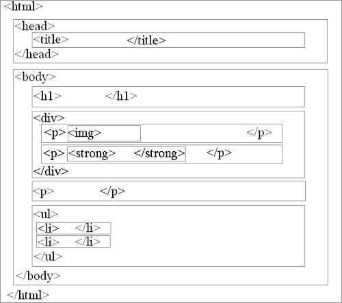
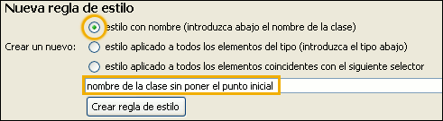
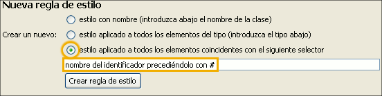

Estilos>>Primeros pasos

Para introducirnos en el mundo de las CSS iremos presentando la información en pequeños bloques, acompañados de un ejemplo que muestre el resultado. En muchos casos les seguirá una práctica muy simple que permita aplicar lo expuesto. La recomendación es que vayas paso a paso y que, en cuanto tengas cierta seguridad, experimentes ampliando el ejercicio propuesto con elementos similares intentando prever los resultados que vas a obtener. Si lo haces así es posible que en algún momento te encuentres con que no todo sale como pretentes, pero no te preocupes porque lo más probable es que algo más adelante encuentres la respuesta al problema que se te ha planteado.
La sintaxis general de cualquier declaración de estilo, va a estar compuesta por tres elementos:
selector {propiedad:valor}
donde selector va a ser, básicamente, el elemento html que deseamos definir, la propiedad el atributo que queremos modificar, apareciendo por último el valor que deseamos asignarle al atributo. La propiedad se separa del atributo mediante dos puntos y ambos se encierran entre llaves. Aunque no es imprescindible cuando sólo hay una propiedad es conveniente añadir un punto y coma al final de cada par propiedad / valor (nos será muy útil para facilitar la lectura cuando se vayan complicando algo más las especificaciones ya que entonces sí que es necesario utilizar el punto y coma como separador)
Cuando los valores requieren especificar un tipo de unidad, esta se indica a continuación del valor numérico, sin espacio de separación: 1cm sería una notación correcta, mientras que 1 cm no lo sería.
Verás que constantemente se hará
referencia a los códigos con los que se obtiene un
determinado efecto. Es conveniente que te vayas familiarizando con
ellos, pero al principio te resultará de gran ayuda la
utilización del editor de estilos que integra N|VU, al que
puedes acceder desde la opción de menú herramientas  editor css
editor css
Aunque posteriormente veremos otras formas más eficientes vamos a empezar a familiarizarnos con el editor mediante la creación de hojas de estilo internas para lo que seguiremos estos pasos
 para comprobar
cómo se han creado en la sección
<head> un par de selectores para englobar las reglas de
estilos que iremos creando. Guárdalo como actividad76.html
para comprobar
cómo se han creado en la sección
<head> un par de selectores para englobar las reglas de
estilos que iremos creando. Guárdalo como actividad76.htmlEl selector más sencillo es el que denominamos de tipo. Se refiere a una etiqueta definida en el lenguaje HTML. Su gran ventaja será que con una única modificación en una hoja de estilos podremos modificar la apariencia de todos las páginas de un sitio al variar la presentación de un determinado tipo.
Ej: body {color:white}
Para cada selector podremos establecer más de una propiedad. Para separarlas utilizaremos el punto y coma, siendo habitual para favorecer la legibilidad, que cada propiedad se escriba en un renglón.
h1 y el
título del
Capítulo 1 en un h2.
cómo se ha definido la regla para los párrafosh1
se presenten
en fuente sans-serif y color granate y otra para que los h2
sean
también sans-serif pero en color gris de intensidad media.
cómo han quedado definidos los estilosSe representa mediante el asterisco (*) y se refiere a cualquier elemento del documento HTML. Su utilización está muy relacionada con las clases y selectores ID, pero suele omitirse.
Si queremos aplicar una propiedad común a varios selectores sin necesidad de tener que definirla en cada caso podemos agruparlos listándolos separados por comas y haciendo una definición común para todos ellos.
Ej.: h1,h2,h3 {color:blue}
h1
y h2 para especificar que deben
llevar el tipo de letra de la familia sans-serif.h1 y h2
La imagen que aparece a la izquierda corresponde a un ejemplo esquemático de la organización de los elementos en una página html.
Se puede observar cómo determinados elementos se encuentran "anidados" dentro de otros.
Esta situación genera unas relaciones que pueden calificarse de familiares (de hecho, la nomenclatura para indicarlas utilizará los términos padre, hijo, ascendiente y descendiente entre otros).
Vamos a ver a continuación algunos ejemplos de lo que significa esta jerarquía en la organización de los elementos de una página html para lo que podremos guiarnos por el siguiente esquema de relaciones:
| Relación | Descripción |
|---|---|
| Un elemento es padre de otro si... | El segundo elemento se encuentra directamente entre la
apertura y el cierre de las etiquetas del elemento padre. Ej: <p>Los
<strong>rumiantes</strong> son
<em>mamíferos</em>El elemento <p> es padre de <strong>
y de <em> |
| Un elemento es hijo de otro si... | La relación anterior es
recíproca, por lo que
los elementos <strong>
y <em>> del
ejemplo
son hijos del
elemento <p> |
| Un elemento es ascendiente de otro si... | Si el segundo se encuentra entre las etiquetas de
apertura y cierre del primero (aunque sea de forma indirecta). Ej: <div>El elemento <div> es
ascendiente de <p>
de <strong> y de
<em> |
| Un elemento es descendiente de otro si... | Está incluido, directa o indirectamente,
dentro de
otro elemento. En el ejemplo anterior <em>
es
desdendiente de <p> y
también de <div> |
| Un elemento es adyacente a otro si ... | Comparte el mismo padre y, además se
encuentra inmediatamente consecutivo al anterior. Ej: <p>Los
<strong>ungulados</strong> son
<em>mamíferos</em> con
<em>pezuñas</em>En este ejemplo sólo el primer <em>
sería adyacente a <strong>
ya que el segundo,
aunque tiene el mismo padre ya no es inmediatamente posterior. |
Los patrones para indicar estas relaciones para elaborar los selectores serían los siguientes:
| Patrón | Utilización |
|---|---|
| x y | Para apuntar hacia cualquier elemento del tipo y que sea descendiente de un elemento del tipo x |
| x > y | Para referirnos a cualquier elemento del tipo y que sea hijo de un elemento del tipo x |
| x + y | Para identificar cualquier elemento del tipo y que sea adyacente a un elemento del tipo x |
Teniendo en cuenta estas relaciones podemos realizar una selección muy específica de elementos del documento para aplicarles un determinado estilo. Podríamos, por ejemplo, querer que los fragmentos que estuvieran enfatizados mediante la etiqueta <em> aparecieran en color verde. Pero podríamos ser incluso más específicos indicando que sólo queremos que aparezcan en color verde los fragmentos enfatizados que formen parte de una lista. Esto lo haríamos colocando primero el selector li y, a continuación separado por un espacio, el selector em para luego especificar las propiedades
Ej.: li em {color: green}
Si la posibilidad de utilizar selectores contextuales aporta una gran flexibilidad, todavía es mucho mayor la que nos brinda la posibilidad de decidir que un estilo se aplicará a aquellos elementos que cumplan determinados atributos.
| Patrón | Utilización |
|---|---|
| x[atributo] | Para apuntar hacia cualquier elemento del tipo x que cuente con un determinado atributo (independientemente del valor que tenga el atributo) |
| x[atributo="valor"] | Para referirse a cualquier elemento del tipo x que cuente con un determinado atributo cuyo valor sea el especificado |
| x[atributo~="valor"] | Algunos elementos pueden admitir varios valores separados por espacios para un atributo. Este patrón nos sirve para identificar a cualquier elemento del tipo x que cuente con un determinado atributo alguno de cuyos valores sea el especificado. |
face en la etiqueta font
se muestren en negrita.Courier como atributo
único de face se
muestren en itálica.serif en el atributo face
se muestren en color verde.El selector class nos permite definir diferentes estilos para el mismo elemento HTML. El ejemplo siguiente supondría la posibilidad de tener dos tipos de párrafo en el documento: uno en azul y otro en rojo, en función de la clase que cada uno lleve indicada. Para establecer la clase añadimos un punto y el nombre que le adjudicamos a la clase a continuación del selector y antes de iniciar las propiedades.
Ej.: p.azul {color: blue}
p.rojo
{color: red}
Se puede aplicar más de una clase a un elemento html. Al aplicar las clases lo haremos separándolas por un espacio.
Ej.: <p class="azul centrado">Texto</p>
Es muy frecuente que la definición de las clases se haga sin ligarlas a una etiqueta concreta. En el ejemplo anterior podría omitirse la referencia al elemento p y eso haría que las características de la clase se aplicaran a cualquier elemento al que se le aplicara. En este caso el selector empieza con un punto seguido del nombre de la clase.
Ej.: .azul {color: blue}
.rojo {color:
red}
El efecto será
equivalente
si se utiliza el selector universal: *.azul {color: blue} *.rojo
{color:
red}
Para crear una regla de tipo clase en el editor de CSS utilizaremos la opción y escribiremos el nombre sin precederlo con el punto (el programa se encargará de ello).

Una vez definidas las clases, la aplicación de las
mismas en N|VU se limita a marcar el fragmento que deseamos
modificar arrastrando con el ratón y elegir la clase
correspondiente en el listado que aparece en la segunda barra de
formato. Con el procedimiento de pinchar arrastrar definiremos zonas
del documento que no tienen que coincidir con un elemento completo,
como podía ser un párrafo, lo cual hace que el
programa genere una etiqueta span que englobe
los fragmentos seleccionados.
Si lo que realmente queremos es aplicar una clase a un elemento, por ejemplo un párrafo, una lista ordenada completa, un contenedor genérico, etc, es preferible que lo seleccionemos situándonos sobre cualquier punto del mismo y marcando la etiqueta que lo identifica en la barra de estado (la que aparezca en último lugar corresponderá al punto en que nos encontramos). Una vez hecha esta marca podemos aplicar la clase:
Las pseudoclases se utilizan para particularizar algunos efectos de determinados selectores en algunas situaciones especiales. Uno de los grupos que se aplica más frecuentemente es el que tiene que ver con la etiqueta <a> para marcar diferentes presentaciones de los enlaces.
La sintaxis es ligeramente diferente de la general: selector:pseudoclase {propiedad : valor}
Su función es cambiar la apariencia según el estado del vínculo. Existen cuatro tipos:
a:link sirve
para establecer
las propiedades de un enlace no visitadoa:visited indica las
propiedades que adoptará un enlace visitadoa:hover especifica
la
apariencia que adoptará un enlace en el momento en que el
botón se sitúa sobre él.a:active
fija las propiedades
que tomará un enlace en el momento en que se pulsa sobre
él para activarlo. El orden en el que se deben especificar estas pseudoclases en las hojas de estilos para que tengan efecto es el que se ha utilizado para describirlas. Esto tiene su lógica debido a que, en caso de haber alguna contradicción entre dos selectores siempre se aplica el enumerado en último lugar: por ello el que se refiere al enlace activo debe ser el último para que se eviten variaciones en la presentación mostrándose las propiedades del enlace visitado(visited) o con el ratón encima (hover). Por el mismo motivo la pseudoclase hover debe aparecer detras de visited para que la apariencia del enlace pueda modificarse al pasar el ratón sobre el mismo, independientemente de que se haya visitado o no el enlace. Por último, visited tendrá que ir después de link puesto que de lo contrario se aplicaría la apariencia del enlace no visitado aunque ya se hubiera estado en la página de destino.
Existen también los llamados pseudoelementos que
verás en la sección dedicada al texto pero
todavía podemos considerar la pseudoclase que se refiere al
primer elemento hijo first-child
que nos
permitiría obtener, por ejemplo un efecto similar al que
presentan algunas ediciones impresas cuando el primer
párrafo de un capítulo se muestra en un
tamaño más grande o en itálica.
a:visited al primer
lugar y comprueba lo que ocurre.Mientras que el selector clase puede aplicarse a varios elementos del mismo o diferente tipo en una página podemos crear también un selector id para diferenciar elementos específicos que añadirán alguna característica diferente de las que tienen los elementos de su clase. El nombre del selector se inicia con el signo # seguido del nombre del identificador.
Ej: #rojo {color: red}
Para crear una regla de tipo id en el editor de CSS utilizaremos la opción y escribiremos el nombre empezando por el signo #

Una vez definidos los selectoresID , la
aplicación de los
mismos habrá que realizarla seleccionando la etiqueta
correspondiente al elemento en la barra de estado y pulsando el
botón derecho para elegir entre las posibilidades que se
muestren en la opción
del menú desplegable.
Puede venir muy bien incluir comentarios que nos sirvan para
aclarar
o recordar algún aspecto de las especificaciones que
escribimos en una
hoja de estilo. Para hacerlo lo iniciaremos con /*
y lo finalizaremos
con */
Ej:
/* pongo la primera línea
del párrafo con ID=muestra en versales de color azul*/
p#muestra:first-line {color: #0000FF;
font-variant: small-caps}